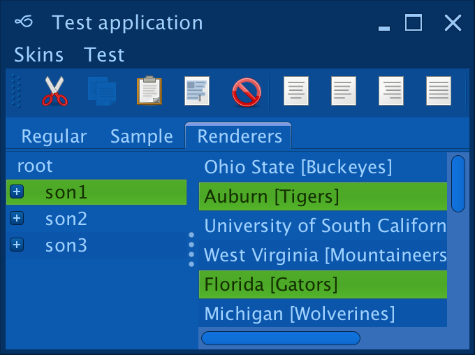
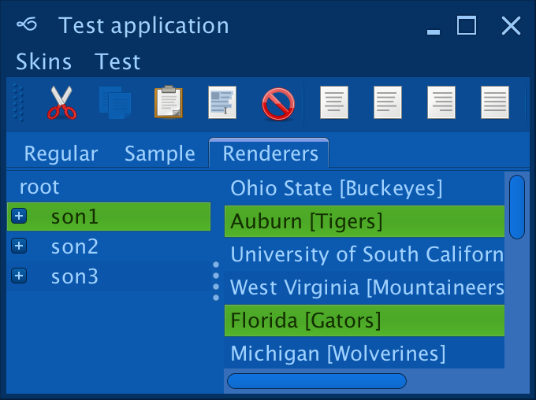
Twilight available in the
org.pushingpixels.substance.api.skin.TwilightSkin.
In addition, the
org.pushingpixels.substance.api.skin.SubstanceTwilightLookAndFeel
can be used with one of the following options:
SubstanceLookAndFeel.setSkin(new TwilightSkin())SubstanceLookAndFeel.setSkin("org.pushingpixels.substance.api.skin.TwilightSkin")-Dswing.defaultlaf=org.pushingpixels.substance.api.skin.SubstanceTwilightLookAndFeelUIManager.setLookAndFeel(new SubstanceTwilightLookAndFeel())UIManager.setLookAndFeel("org.pushingpixels.substance.api.skin.SubstanceTwilightLookAndFeel");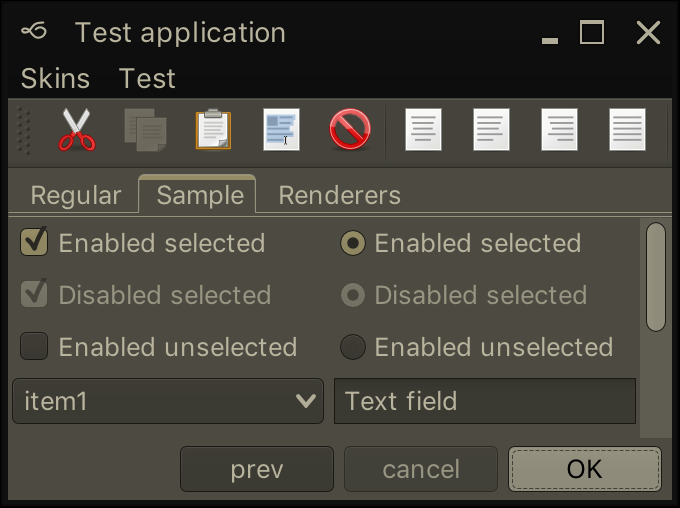 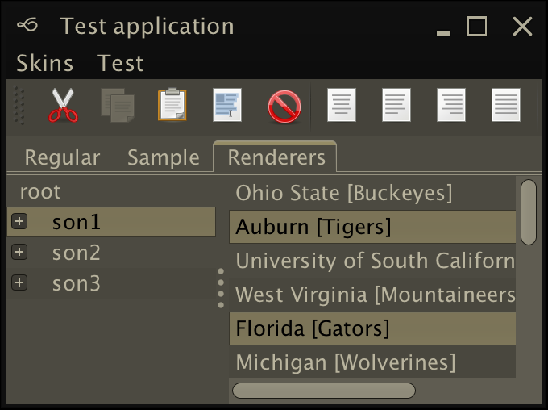
Magellan available in the
org.jvnet.substance.api.skin.MagellanSkin.
In addition, the
org.jvnet.substance.api.skin.SubstanceMagellanLookAndFeel
can be used with one of the following options:
SubstanceLookAndFeel.setSkin(new MagellanSkin())SubstanceLookAndFeel.setSkin("org.pushingpixels.substance.api.skin.MagellanSkin")-Dswing.defaultlaf=org.jvnet.substance.api.skin.SubstanceMagellanLookAndFeelUIManager.setLookAndFeel(new SubstanceMagellanLookAndFeel())UIManager.setLookAndFeel("org.jvnet.substance.api.skin.SubstanceMagellanLookAndFeel");
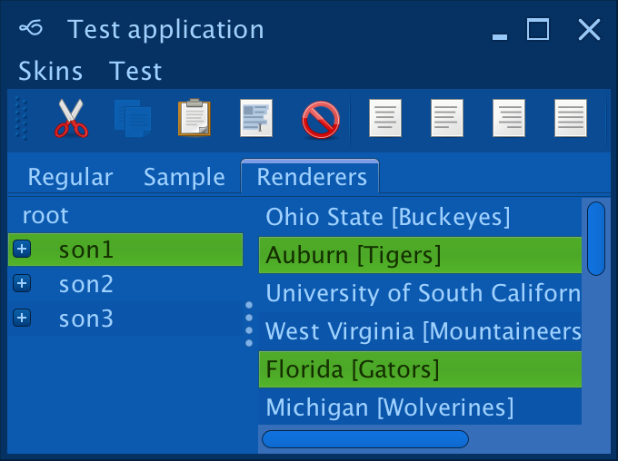
Graphite available in the
org.pushingpixels.substance.api.skin.GraphiteSkin.
In addition, the
org.pushingpixels.substance.api.skin.SubstanceGraphiteLookAndFeel
can be used with one of the following options:
SubstanceLookAndFeel.setSkin(new GraphiteSkin())SubstanceLookAndFeel.setSkin("org.pushingpixels.substance.api.skin.GraphiteSkin")-Dswing.defaultlaf=org.pushingpixels.substance.api.skin.SubstanceGraphiteLookAndFeelUIManager.setLookAndFeel(new SubstanceGraphiteLookAndFeel())UIManager.setLookAndFeel("org.pushingpixels.substance.api.skin.SubstanceGraphiteLookAndFeel");
 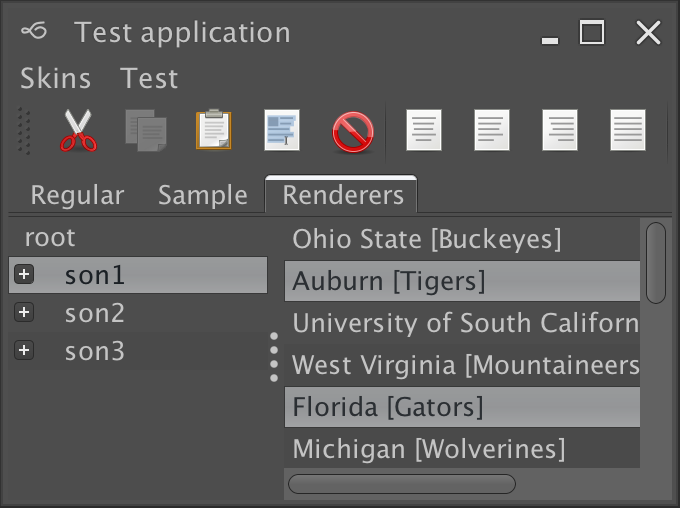
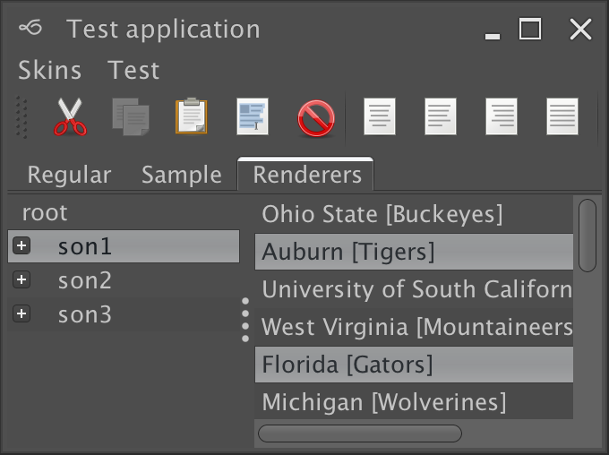
Graphite Glass available in the
org.pushingpixels.substance.api.skin.GraphiteGlassSkin.
In addition, the
org.pushingpixels.substance.api.skin.SubstanceGraphiteGlassLookAndFeel
can be used with one of the following options:
SubstanceLookAndFeel.setSkin(new GraphiteGlassSkin())SubstanceLookAndFeel.setSkin("org.pushingpixels.substance.api.skin.GraphiteGlassSkin")-Dswing.defaultlaf=org.pushingpixels.substance.api.skin.SubstanceGraphiteGlassLookAndFeelUIManager.setLookAndFeel(new SubstanceGraphiteGlassLookAndFeel())UIManager.setLookAndFeel("org.pushingpixels.substance.api.skin.SubstanceGraphiteGlassLookAndFeel");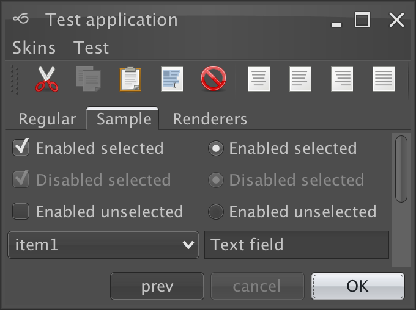 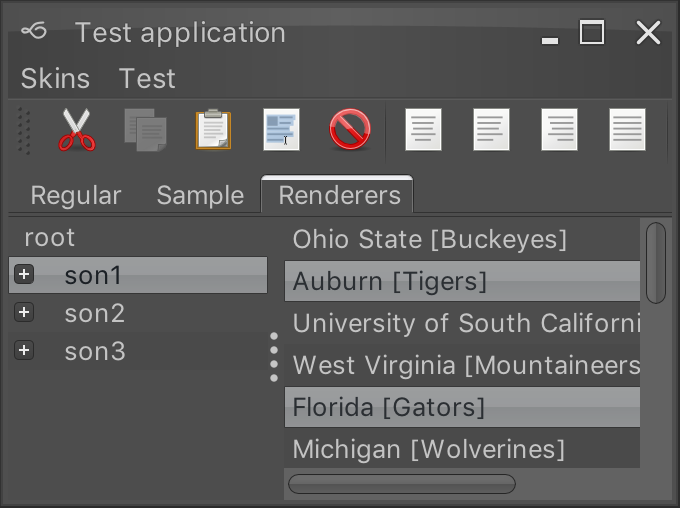
Graphite Aqua available in the
org.jvnet.substance.api.skin.GraphiteAquaSkin.
In addition, the
org.jvnet.substance.api.skin.SubstanceGraphiteAquaLookAndFeel
can be used with one of the following options:
SubstanceLookAndFeel.setSkin(new GraphiteAquaSkin())SubstanceLookAndFeel.setSkin("org.pushingpixels.substance.api.skin.GraphiteAquaSkin")-Dswing.defaultlaf=org.jvnet.substance.api.skin.SubstanceGraphiteAquaLookAndFeelUIManager.setLookAndFeel(new SubstanceGraphiteAquaLookAndFeel())UIManager.setLookAndFeel("org.jvnet.substance.api.skin.SubstanceGraphiteAquaLookAndFeel");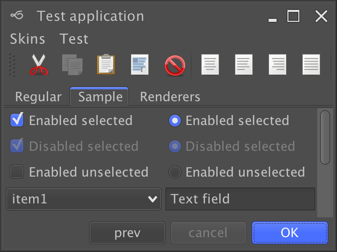 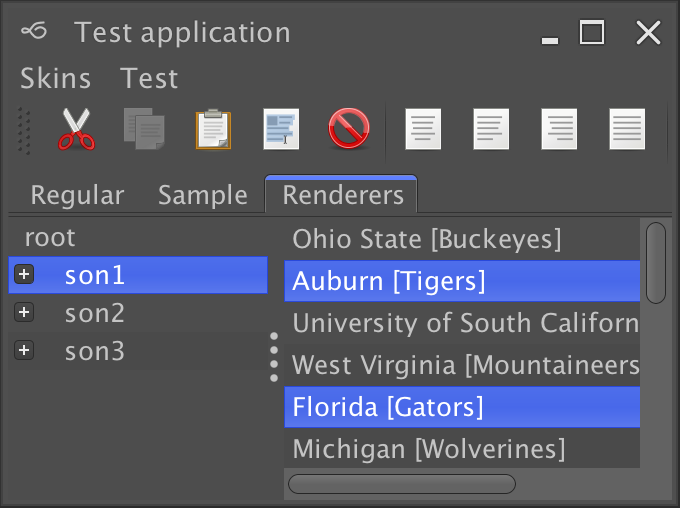
Raven available in the
org.pushingpixels.substance.api.skin.RavenSkin.
In addition, the
org.pushingpixels.substance.api.skin.SubstanceRavenLookAndFeel
can be used with one of the following options:
SubstanceLookAndFeel.setSkin(new RavenSkin())SubstanceLookAndFeel.setSkin("org.pushingpixels.substance.api.skin.RavenSkin")-Dswing.defaultlaf=org.pushingpixels.substance.api.skin.SubstanceRavenLookAndFeelUIManager.setLookAndFeel(new SubstanceRavenLookAndFeel())UIManager.setLookAndFeel("org.pushingpixels.substance.api.skin.SubstanceRavenLookAndFeel");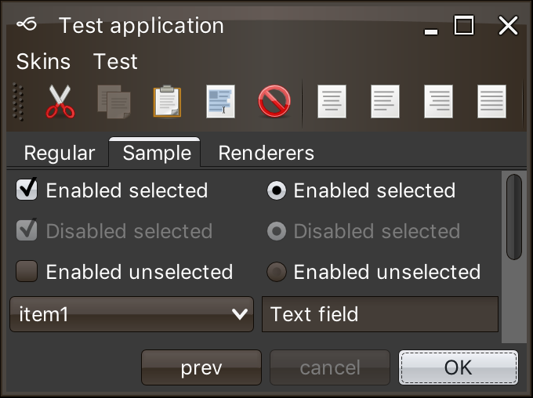 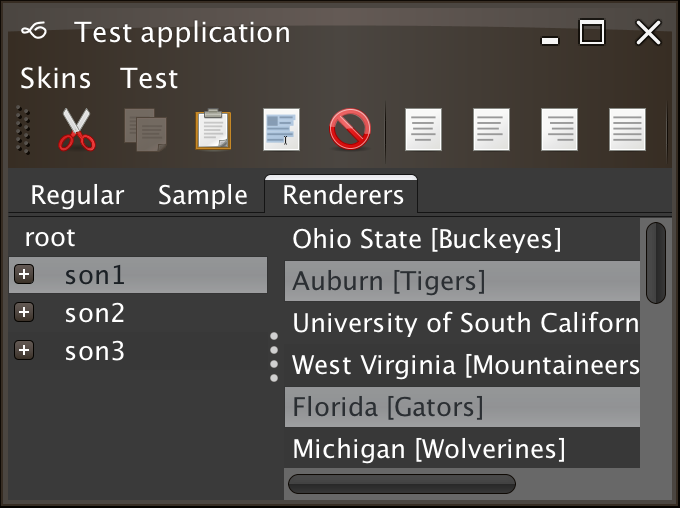
Challenger Deep available in the
org.pushingpixels.substance.api.skin.ChallengerDeepSkin.
In addition, the
org.pushingpixels.substance.api.skin.SubstanceChallengerDeepLookAndFeel
can be used with one of the following options:
SubstanceLookAndFeel.setSkin(new ChallengerDeepSkin())SubstanceLookAndFeel.setSkin("org.pushingpixels.substance.api.skin.ChallengerDeepSkin")-Dswing.defaultlaf=org.pushingpixels.substance.api.skin.SubstanceChallengerDeepLookAndFeelUIManager.setLookAndFeel(new SubstanceChallengerDeepLookAndFeel())UIManager.setLookAndFeel("org.pushingpixels.substance.api.skin.SubstanceChallengerDeepLookAndFeel");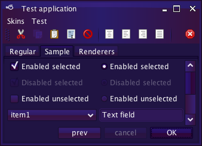 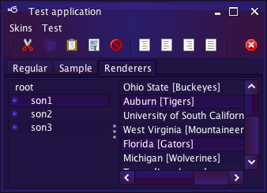
Emerald Dusk available in the
org.pushingpixels.substance.api.skin.EmeraldDuskSkin.
In addition, the
org.pushingpixels.substance.api.skin.SubstanceEmeraldDuskLookAndFeel
can be used with one of the following options:
SubstanceLookAndFeel.setSkin(new EmeraldDuskSkin())SubstanceLookAndFeel.setSkin("org.pushingpixels.substance.api.skin.EmeraldDuskSkin")-Dswing.defaultlaf=org.pushingpixels.substance.api.skin.SubstanceEmeraldDuskLookAndFeelUIManager.setLookAndFeel(new SubstanceEmeraldDuskLookAndFeel())UIManager.setLookAndFeel("org.pushingpixels.substance.api.skin.SubstanceEmeraldDuskLookAndFeel");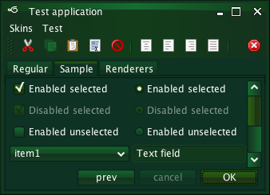 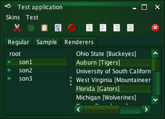